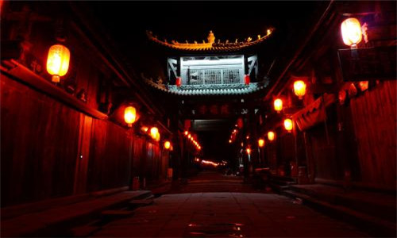

morly旅游网
昭化，古称葭萌。古城四面环山，三面临水，山清水秀，人杰地灵，古遗址、遗迹众多，民风古朴典雅，是广大游客观光旅游，休闲度假，学者考古研究的理想之地。至今已有4000多年的历史和2244年连续建县史，是国家重点风景名胜区——剑门蜀道风景名胜区，全国重点文物保护单位——剑门蜀道遗址群的重要组成部分，是迄今为止国内保存最为完好的唯一一座三国古城。
昭化古城景区面积20平方千米，总人口1.7万人，1992年被四川省人民政府命名为四川省历史文化名镇。古城风貌依旧，历史文化底蕴丰厚，是中国古代最早的县治地之一，素有“巴蜀第一县，蜀国第二都”之称。古城位于白龙江、嘉陵江、清江三江交汇处，其嘉陵江水在此洄澜，水系宛成，太极天成，有“天下第一山水太极”自然奇观之美誉。古城四面环山、三面临水、山清水秀、人杰地灵，古遗址、遗迹众多，民风古朴典雅。
西汉元封二年（前109年），武帝开西地南夷，置县24，云南为其一。取县名为“云南”有三种说法，一是“彩云南现”说，建县时，县治驻地现云南驿村北面的龙兴和山出现五彩云霞，县城在彩云之南称“云南” [5] ；二是“云山之南”说，云山即（现宾川鸡足山，常凝云气高数丈，县城在云山之南称云南；三是“武帝追梦”说，相传汉武帝夜梦彩云，遣使追梦，在今祥云县境追到彩云，因置云南县 [6-7] 。
三国文化发祥之城
昭化古城众多的历史文化中，尤以三国文化著称于世。历史上有“蜀汉兴于昭化，亡于剑门”之说，现存三国遗迹俯拾皆是，有闻名遐迩的葭萌关、牛头山、费祎墓、鲍三墓。
昭化古城三国文化源远流长，先主刘备曾在此厚树恩德，广收民心，操练兵马，屯积粮草，创建了建立蜀汉政权的根据地。诸葛亮从建兴五年起，六出祁山伐魏，一直奔忙于葭萌古蜀道上。蜀汉后期，费祎主持蜀中军政大事，奉命在昭化设丞相府，在此抵御魏国大军。张飞挑灯夜战马超于战胜坝，传为千古佳话。姜维兵困牛头山，留下令人称奇的“拜水池”。古城内还存有武侯祠、关帝庙等遗址。蜀汉遗迹、遗风、民间传说源远流长，三国文化影响深远。
古城风貌
昭化古城始建于春秋战国时期，至明清达至顶盛。古城“旧系土城”，明正德年间“包筑以石”，共设四门，南门“临江”、东门“瞻凤”、西门“临清”、北门“ 拱极”，占地面积29公顷，地池外形微圆，状若葫芦。古城建筑群布局合理，现存的四条大街，五条小巷均用当地青砂石板按三横两纵、中间高两侧低的瓦背风格随坡就势而成，且街巷之间“丁”字相连，具有“道路交错相通，城门不相对”的军事防御特色。大街小巷均有着良好空间格局和亲切宜人的尺度。古街两侧保留着完整的明清建筑，龙门书院、考棚、怡心园、益合堂等保存十分完整，多为穿逗木结构、小青瓦、古朴的川北风味民居。多处古老民居体现了南北古代建筑文化的和谐相融。
2004年7月，上海同济大学，中国历史文化名城研究中心主任阮仪三教授考察昭化古城时对古城建筑评价为：八字门头，立架垂拱，青石柱础，木柱玄栋；三面围廓，门扉窗棂，雕琢精良，图饰古朴，有商贾豪宅，存历史故事风情。2003年元坝区委、区政府在修复昭化古城时，坚持“保护第一，合理利用”的原则，先后请四川大学、同济大学教授多次指导古城修复工作，在建设中，精心施工，修旧如故，力求原汁原味恢复古城建筑风貌，经过几年的精心打造和修复，昭化古城的总体风貌已得到全面恢复，一座展示昔日繁荣与辉煌的古城又重现在世人面前。
民俗文化
昭化古城，千年的古文明蕴育了大量的民风民俗文化，拥有川主庙会、城隍会、娘娘会、舞狮、牛牛灯、采莲船、走高脚、吹唢呐、哭嫁等传统节日、传统风俗近 20种；源于本地广为流传的“张飞挑灯夜战马超”、何易于“腰笏挽纤”、唐明皇摆宴坝摆宴、姜维兵困牛头山等传说故事30余个。拥有《娘送子》、《嫁歌》等两百余首昭化名歌，在民间广为流传。特别是昭化《提阳戏》被誉为古戏剧活化石。该戏是一种以酬神、许愿为主的傩祭活动，它是一种富有宗教性和地方性特色的综合艺术，长期植根于民间，深受当地百姓的喜爱。它分为《天戏》和《地戏》两部分。《天戏》是用提线木偶来表演上天的三十二神为主，《地戏》则由人化妆扮相，戴上木制面具来演出，表演的剧目大多是传统神话之类，诸如《孙悟空大闹天空》、《七仙女下凡》、《孟姜女哭长城》等.
主要景点
昭化古城拥有费祎墓、鲍三娘墓等全国三国文化垄断性资源，是迄今为止三国文化资源保存最为完整的一座古城。公元252年蜀汉重臣费祎受命在汉寿(昭化)开府，后酒醉被降人郭循所害，死后葬于此。费祎墓及鲍三娘墓至今保存完好。战胜坝、牛头山、姜维井、关索城、葭萌关、天雄关等三国遗址、遗迹群保存完整，是蜀汉政权兴亡见证地。同时，昭化古城是三国文化的重要发祥之城。先主刘备曾在此厚树恩德，广收民心，操练兵马，屯积粮草，创建了建立蜀汉政权的根据地。诸葛亮从建兴五年起，六出祁山伐魏，一直奔忙于葭萌古蜀道上。蜀汉后期，费祎主持蜀中军政大事，奉命在昭化设丞相府，在此抵御魏国大军。张飞挑灯夜战马超于战胜坝，传为千古佳话。姜维兵困牛头山，留下令人称奇的"拜水池"。
古城内还存有武侯祠、关帝庙等遗址。蜀汉遗迹、遗风、民间传说源远流长，三国文化影响深远。原全国政协副主席杨汝岱在昭化古城考察时激情写下了"三国重镇"的题词。我国著名古建筑专家，世界遗产管理委员会中国委员会副主席罗哲文，2004年到昭化考察时激动地指出:"昭化古城特别众多的三国遗址，突出展示了三国蜀汉文化的丰富内涵，是研究蜀汉政治、军事、经济文化的重要例证，十分珍贵"。
昭化古城景区不仅以历史文物丰富而著称，而且以古城景区昭化古城景区不仅以历史文物丰富而著称，而且以古城景区风景奇特秀丽而著称。白龙江、嘉陵江在此交汇，形成了一个直径约为5公里，面积为20平方公里的天然山水太极图，古城位于山水太极阳眼之处，有“天下第一山水太极”自然奇观之美誉。牛头山，云台山， 悬崖绝壁，刀削斧劈，犹如一擎天石拄，耸立于天地之间。
内容整理至网络，如有侵权，请联系我们！1255394075@qq.com